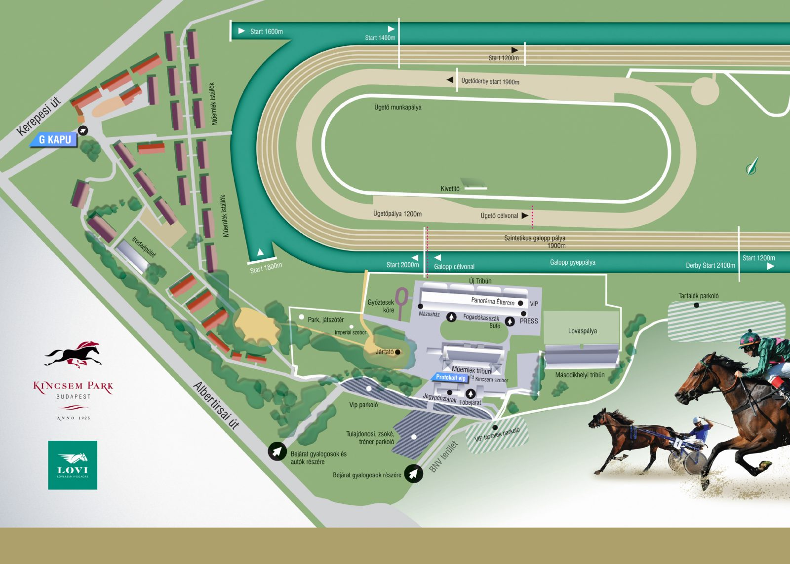

A Kincsem Park Magyarország legjelentősebb lóversenyközpontja, ahol galopp és ügetőversenyek egyaránt zajlanak. A létesítmény a hagyomány és a modern sportélmény találkozása: egy hely, ahol a lóversenyzés múltja, jelene és jövője egyszerre van jelen, és ahol minden versenynap új izgalmakat ígér.
Kincsem – a magyar lóversenyzés ikonja
Kincsem 1874-ben született a kisbéri ménesben, gazdája pedig gróf Blaskovich Ernő volt, aki fiatal kora óta hitt rendkívüli képességeiben. Trénere, Hesp Róbert gondos felkészítése révén Kincsem a lóversenyzés történetének legpáratlanabb pályafutását érte el: 54 rajt, 54 győzelem, több országban és különböző pályákon.
Ő volt az a ló, aki nem ismert vereséget, aki saját személyiségével, különleges szokásaival és kedvenc macskájához fűződő kapcsolatával is lenyűgözte korának közönségét. Hírneve és győzelmei ma is élnek: a róla elnevezett versenynapok és a Park elkötelezett rajongói méltón őrzik emlékét.
Kincsem Családfa
Kincsem

A Kincsem Park felépítése és sajátosságai
A Kincsem Park letisztult, tágas és sportorientált kialakítása kifejezetten a versenyzés dinamikáját szolgálja.
Több pályarendszer működik benne, amelyek különböző versenytípusoknak adnak otthont:
- A gyepes galopp-pálya a vágtázó telivérek számára biztosít optimális, rugalmas felületet, amely a nagy távú és klasszikus versenyek otthona.
- Az ügetőpálya speciális, gyors burkolattal rendelkezik, hogy biztonságos legyen a sulkyval közlekedő hajtók és lovaik számára.
A lelátók úgy vannak elhelyezve, hogy a nézők közelről figyelhessék a rajtot, a kanyarokat és a befutót is — ennek köszönhetően a versenyek minden mozzanata közvetlen élményt nyújt. A vendéglátó- és közösségi terek a modern rendezvényhelyszínek kényelmét hozzák el a lóverseny világába: éttermek, fogadóirodák, családi programok és kulturális események várják a látogatókat.
Az épületek és kiszolgáló létesítmények célja, hogy minden szereplő — ló, lovas/hajtó és közönség — a legjobb körülmények között lehessen jelen a sportban. A Park infrastruktúrája egyaránt szolgálja a magas szintű versenyrendezést és a látogatók kényelmét.
Sport és közösségi élmény találkozása
A Kincsem Park nem csupán versenypálya, hanem pezsgő találkozóhely is: a lóversenyek mellett fesztiválok, tematikus hétvégék, esti programok és családi események színesítik a naptárt. Ez az a hely, ahol a hagyományok nemcsak megmaradnak, hanem új életre kelnek — új rajongókkal és modern élményekkel gazdagodva.